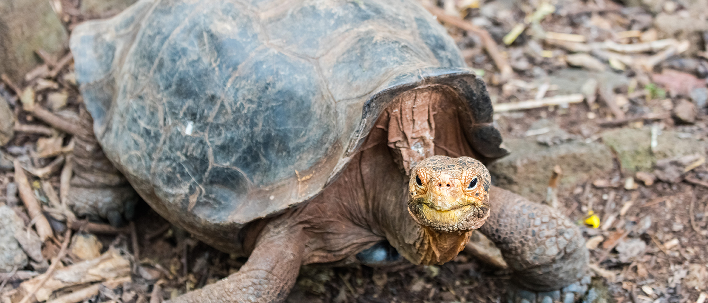
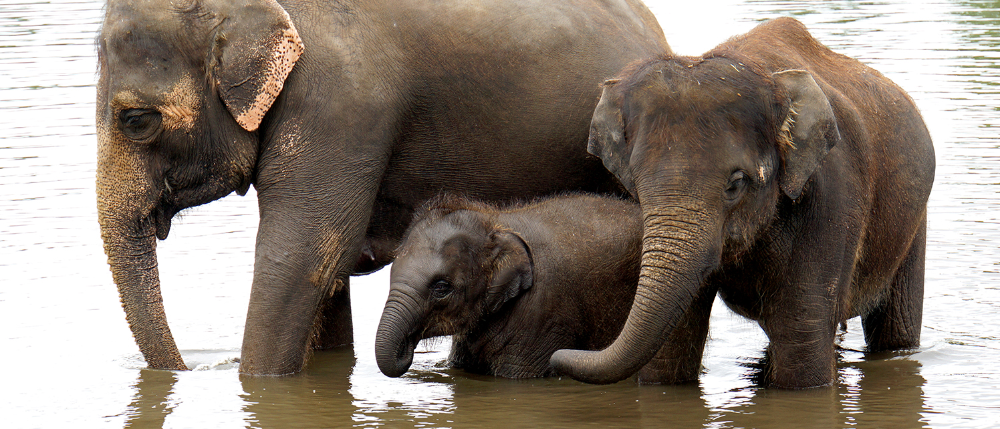
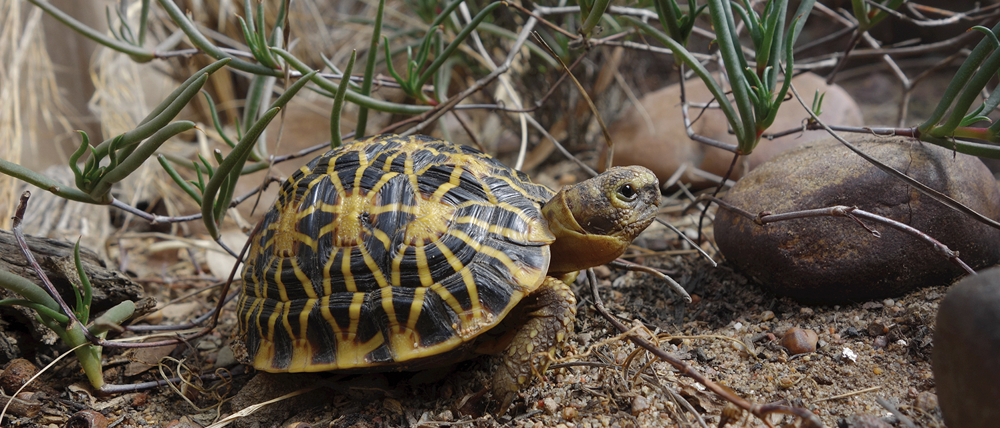
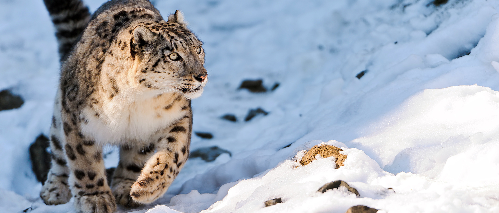

Visitor Information
Stop Deforestation - Protect Rainforests, Species, Communities and our Planet
Every day, precious acres of rainforest are lost forever. Critically endangered species lose their habitat. Communities lose their forest livelihoods. Water sources and weather systems are disrupted. The planet is impacted when stored carbon is released by deforestation.
You can be a part of the solution.
Rainforest Trust believes that the simple solution of stopping the destruction of the last remaining rainforests will positively impact species, communities and the planet. A gift to our Conservation Action Fund supports our most urgent work around the world.
Our conservation work makes a tangible difference. Whether it is preserving the Amazon and the way of life for indigenous people, purchasing rainforest in Borneo to create a urgently-needed corridor for Pygmy Elephants to migrate or establishing a network of new national parks across Cambodia, with your support we will preserve all types of critical areas for life on Earth. On average, we purchase and permanently protect an acre of habitat for just $1.98 - less than your daily cup of coffee.
Furthermore, your gift will have double the impact.
Any gift to the Conservation Action Fund supports our critical project work and is matched dollar for dollar by our SAVES Challenge. This means your gift of $100 has the impact of $200, whereby twice the number of acres will be saved.
Your support will make a difference.
Join us on this conservation journey to care for and protect our planet. Please help us reach our goal to save 50 million acres of rainforest and wildlife habitat by 2020.
Rainforest Trust Conservation Expeditions
More than just an opportunity to travel, Rainforest Trust's Conservation Expeditions allow you to preserve nature while experiencing it firsthand in the many reserves we have grown and established since 1988.
From the lush rainforests of Borneo to the historic islands of the Galápagos, your travel with Rainforest Trust will allow you an exclusive behind-the-scenes experience as you meet our forest guards, engage with local communities and explore the natural wonder and majestic wildlife at our project sites. Join us to watch Pygmy Elephants stroll along riverbanks in Borneo, catch sight of Darwin’s finches in the Galápagos and search for iconic species in world-renowned Kruger National Park, South Africa.
Ecotourism like Rainforest Trust's Conservation Expeditions enhance the sustainability of our protected areas by raising awareness about the importance of protecting nature while providing a steady stream of income to support the management of these reserves.
When you travel with Rainforest Trust, you help us protect the endangered species that need it most. Please contact us today for more information about our tours as space is limited.
ECUADOR / GALÁPAGOS
SEE ECUADOR'S STUNNING LANDSCAPES,
INCLUDING THE GALÁPAGOS ISLANDS
March 18 - March 28, 2018
$6,000 per person to $9,400 per couple

Guests will begin with a day trip from Quito to the Antisanilla Reserve, which was created through multiple land purchases by Rainforest Trust's partner Jocotoco Foundation. The Antisanilla landscape includes dramatic cliffs, where up to 30 Critically Endangered Andean Condors have been spotted - an amazing occurrence, as only around 100 currently exist in the country. While there, we may also have the opportunity to see Spectacled Bears, Mountain Tapirs and Andean Foxes.
Next, we will travel to Yanacocha Reserve, which was created to protect nearly the entire known population of the Critically Endangered Black-breasted Puffleg, an incredibly rare hummingbird. We hope to also see such bird species as the Curve-billed Tinamou, Imperial Snipe and Golden-breasted Puffleg.
A plane ride will then take guests to the easternmost Galapagos Island of San Cristóbal. After a few days of exploring this island, we will board a private boat and cruise around the archipelago of volcanic islands in hopes of spotting Darwin's finches, tortoises, Galapagos Penguins and Galapagos Sea Lions.
Potential Species:
Andean Condor; Spectacled Bear; Mountain Tapir; Sword-billed Hummingbird; Sapphire-vented Puffleg; Woodpecker Finch; Waved Albatross
Rainforest Trust Supported Locations:
Antisanilla Biological Reserve; Yanacocha Reserve; Galapagos Nature Reserve (future)
COST:
$9,400 per couple (sharing a room)
$6,000 per single (sharing a cabin on the boat for 3 nights)
$8,600 per single (with single occupancy cabin for 3 nights)
MALAYSIA
DISCOVER WILDLIFE IN THE UNIQUE HABITATS
OF BORNEO AND TAMAN NEGARA
June 20 - June 30, 2018

The trip will begin in the Titiwangsa Mountains of Malaysia, where Rainforest Trust is working to increase protection for Critically Endangered Malayan Tigers through the establishment of Kenyir State Park. Participants will lodge on the banks of the nearly 650,000- acre Kenyir Lake, which boasts over 340 secluded islands and 12 waterfalls, while also being surrounded by lush rainforest.
From there, we will travel to Borneo in search of Critically Endangered Bornean Orangutans and Endangered Proboscis Monkeys and Pygmy Elephants, in addition to a variety of birds found nowhere else on Earth. The habitats we will encounter on Borneo vary significantly from limestone outcrops to riverine forest vegetation to lowland rainforest. While there, we will travel down the Kinabatangan River, known by conservationists as one of the most biodiverse areas on the planet; visit the legendary Danum Valley, which is home to over 120 mammal species; and explore the newly created Kuamut Forest Reserve, a 206,000-acre protected area Rainforest Trust helped establish.
This is the ideal time of year to visit Malaysia.
Potential Species:
Borneo Pygmy Elephant; Bornean Orangutan; Helmeted Hornbill; Indopacific Crocodile; Clouded Leopard; Flying Lemur
Rainforest Trust Supported Locations:
Kenyir State Park (future); Danum Valley Conservation Area; Kinabatangan River (various locations)
COST:
TBA
SOUTH AFRICA
EXPLORE CONSERVATION SUCCESSES
AND BEAUTIFUL SCENERY IN SOUTH AFRICA
August 19 - September 2, 2018

This trip will begin in Cape Town, where we will visit Cape Point Nature Reserve. Here, we will traverse the rugged rocks and sheer cliffs that tower more than 600 feet above the sea, all the while keeping an eye out for Cape Baboons, Cape Mountain Zebras and well over 250 species of birds. While there, you will also have the once-in-a-lifetime opportunity to swim with sharks off the coast. Then, a trip to the Rainforest Trust supported Geometric Tortoise Preserve will show visitors how a relatively small protected area can make a big impact for threatened species.
From Cape Town, we will travel nearly a thousand miles north via the iconic Blue Train to Pretoria, providing a unique experience to view the spectacular scenery of South Africa. From Pretoria, we will head to incredible Soutpansberg, an epicenter of endemism, where we will search for the iconic Leopard. Finally, we will spend several days in world-renowned Kruger National Park where we will search for iconic African species.
Taking place in fall 2018, this trip will last approximately two weeks and will span over a thousand miles, allowing for ample time to take in South Africa's rich history, amazing wildlife and acclaimed wine.
Potential Species:
Geometric Tortoise; Cape Baboon; Cape Mountain Zebra; African Buffalo; Giraffe; African Elephant; Lion
Rainforest Trust Supported Locations:
Geometric Tortoise Preserve; Adam's Mission Wetland Nature Reserve (future); Isipingo Wetland Environmental Conservation Reserve (future)
COST:
TBA
NEPAL
EXPERIENCE NEPAL,
A COUNTRY RICH IN BIODIVERSITY AND CULTURE
2019

Nepal sits at the top of the world. A land of mists, mountains and Hindu and Buddhist temples, Nepal is as rich in biodiversity as it is in culture.
Rainforest Trust has been working with our partners to establish two protected areas that conjoin with others to create a massive 14.5 million-acre range spanning across Nepal, China and India. Numerous Critically Endangered, Endangered and Vulnerable species call this area home including the Chinese Pangolin, Red Panda, Snow Leopard, Spikenard, Himalayan Musk Deer and the Saker Falcon.
This journey will take you on hikes within protected areas, through valleys and in view of mountain passes with our Rainforest Trust conservation staff. In addition to seeing incredible wildlife, adventurers will experience the thousands of years of history and culture that exist around every corner in Nepal.
While more details are still to come regarding this trip of a lifetime, you can reserve your place today.
Potential Species:
Indian Pangolin; Himalayan Musk Deer; East Himalayan Yew; Saker Falcon; Asiatic Black Bear; Clouded Leopard
Rainforest Trust Supported Locations:
Lumbasumba Conservation Area (future)
COST:
TBA
Keep an eye out for more trips coming in 2019!
|